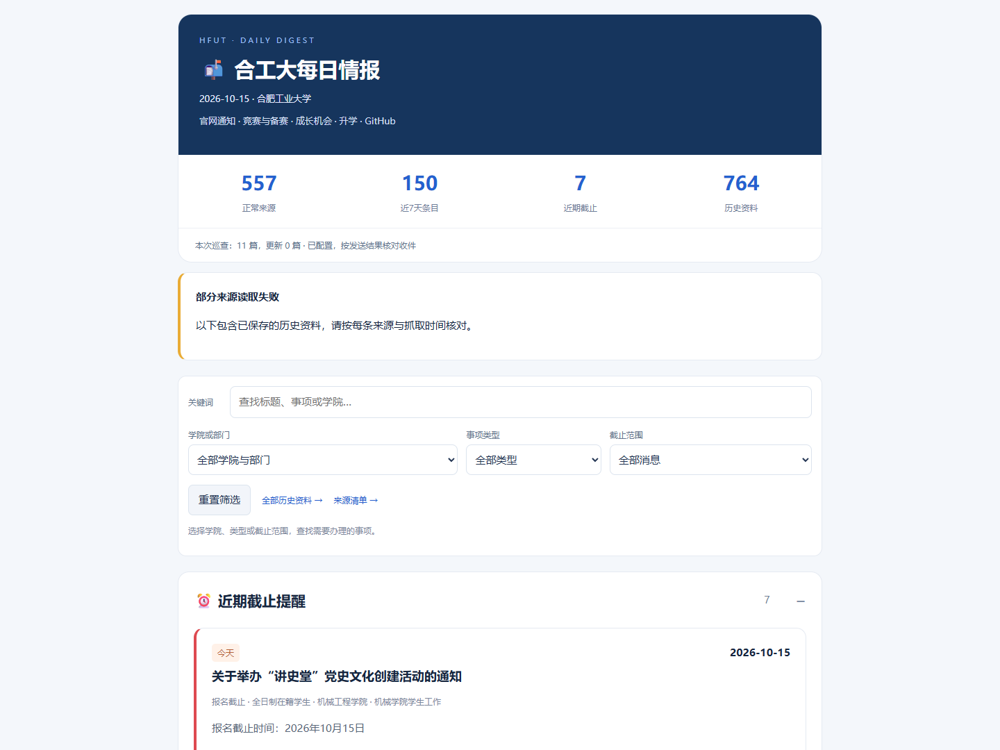

校园信息 · 工具项目
合工大校园情报助手
把学院与部门通知汇聚起来，保留官方原文，提供截止提醒与每日邮件。
查看项目
一个个人工具与资源小站

校园信息 · 工具项目
把学院与部门通知汇聚起来，保留官方原文，提供截止提醒与每日邮件。
项目笔记 · 01
为什么要把散落在不同网站的校园信息收拢到一起。
项目笔记 · 02
公开栏目采集、分类查找，以及有原文依据的截止时间。
项目笔记 · 03
从本机到云端的部署记录，以及一次实际运行的验收结果。
换一个关键词，或者返回全部内容看看。
这里展示自己做过的工具，也保留构建过程中的问题、方法与实际验证记录。
个人项目展示，非学校官方平台。校园情报详情中的截图与统计标明了记录日期；具体通知及报名要求请以官方原文为准。